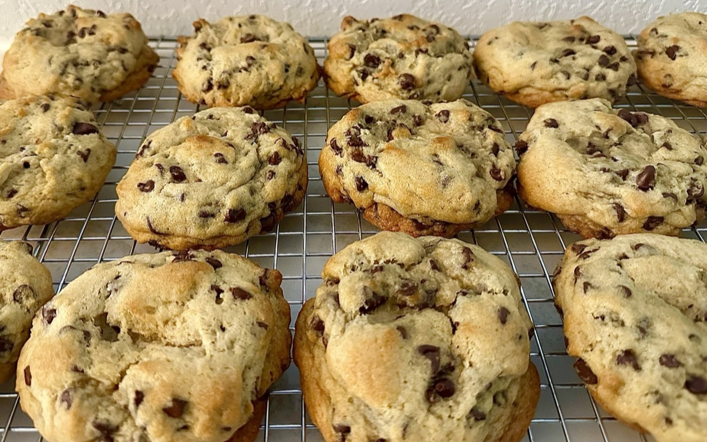
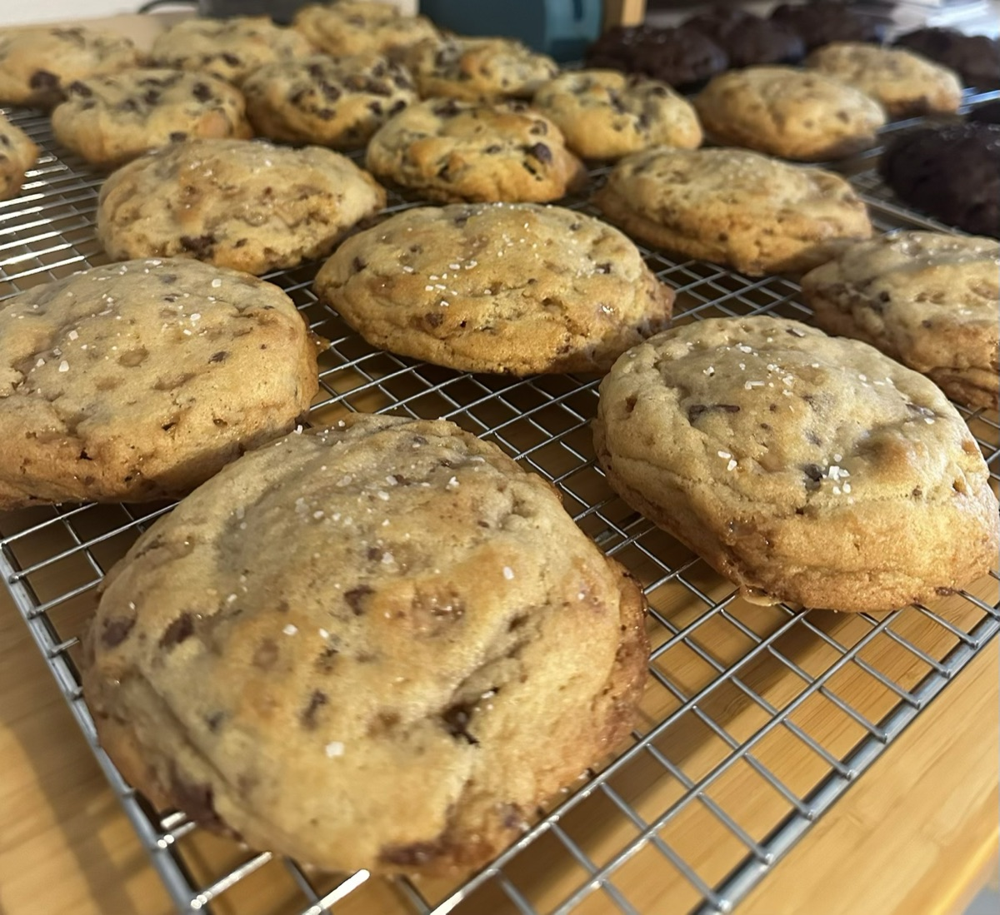
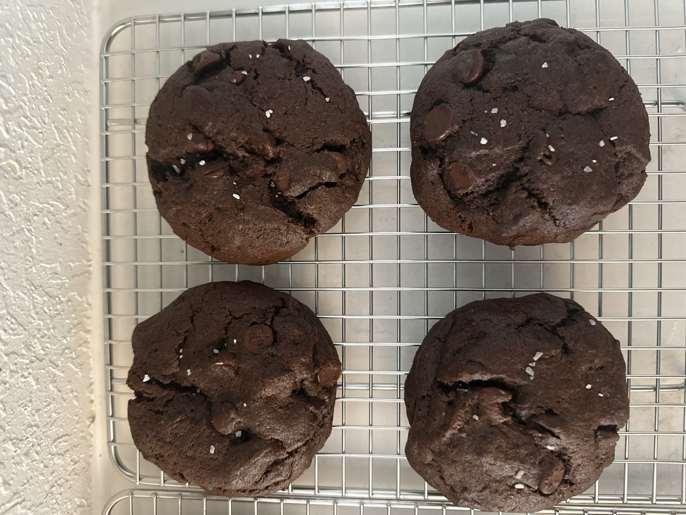
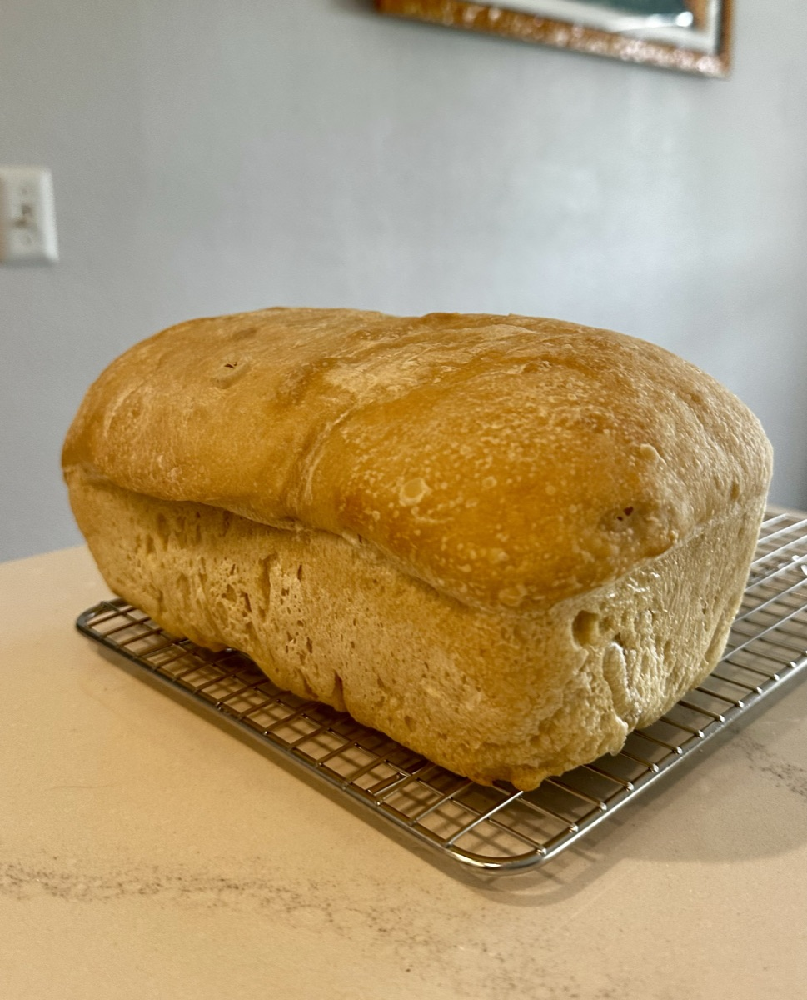

Handcrafted, New York–style sourdough discard cookies. Thick, soft, and perfect for sharing…or not!
Half-dozen $24 Dozen $42 One flavor per half dozen


$6 per loaf
Naturally leavened sandwich loaves — soft inside, golden crust, and baked to order.

Now taking orders! Email to place an order — please give at least 3 days' notice so I can plan the bake.
Prefer to grab one today? The cookies are available at Compass Bible Church coffee shop, open Monday–Saturday 8am–4pm.
Email caitlins.cottage.kitchen@gmail.com
This kitchen operates under Texas cottage food law. Products are prepared in a home kitchen that is not inspected by a health department and may contain allergens.
DSHS Cottage License: #12165